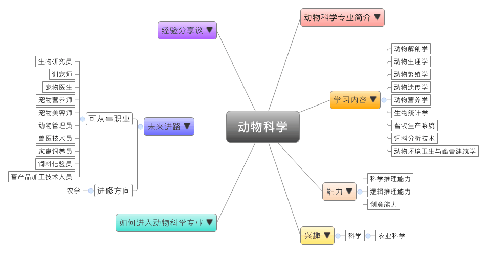
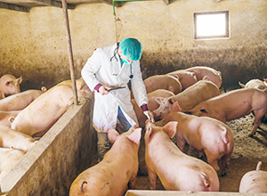

- 专业大观园
-

- 专业介绍
-
什么是动物科学？
动物科学作为生命科学的分支，它即是一门认识动物遗传、繁衍之生命规律的学问。而动物科学的目的是有鉴于当今人们对高品质肉类的需求日益增加，因此像是牛、马、羊、猪、鸡、兔子、小白鼠、猫与狗等动物，常常是动物科学用来了解动物生理知识的研究对象。动物科学常会通过大量的实验，并对饲料进行研发改良，现在常会辅以科学方式进行基因育种、饲养管理。在职场上，动物科学的研究领域已从畜牧业扩展到水产动物、宠物、观赏动物的饲养、育种、繁殖，以及产品加工；此外，应用在动物身上的克隆、转基因、嵌合体技术的发展，也让此专业的人才需求倍增。在生活中，畜养动物除了可以满足人们对于高档肉类饮食的需求，狗猫之类的宠物在这个科技发达，心灵却相对空虚的社会里却能适时地慰藉了人们的心灵。
动物科学专业除了培养学生具备动物科学的理论与知识，学生也需具备动物资源与环境保护的素养，并且熟悉动物生产与畜产品流通等通路与市场的部分，让学生能在动物科学相关领域从事推广、开发、经营与管理的工作。

动物生理学抽血进行检验  动物环境卫生与饲养管理见习
- 学习内容
-
动物科学专业学生主要学习动物科学之基本理论，包括动物遗传育种、动物生产与管理、动物繁殖技术，以及动物营养与饲料改良。此外，学生也须到实习场域进行动物育种、繁殖、照顾，以及肉类加工品的生产与管理训练。
本专业学习方向通常分为四类：动物遗传育种、动物营养与饲料、家畜环境卫生、畜牧业经营与管理。动物科学专业主干课程有：动物解剖学、动物生理学、动物遗传学、动物营养学、饲料学、生物统计学、饲料分析技术、动物繁殖学、动物环境卫生与畜舍建筑学、畜牧生产系统、动物育种学、群体遗传学、生化遗传学、配合饲料工艺原理与技术……等；此外，学生须加选一门以上的实践性教学课程，如：饲料质量检测、动物繁殖与遗传实验进行选修。
本专业可以习得的知识与获得之能力、技能列点：第一，熟悉动物繁殖技术、种畜评估、资源调查与育种体系等方法；第二，具备饲养饲料搭配、动物防疫、牧场设计、草地建设、家畜产品开发等技术；第三，掌握动物科学与畜牧业生产的发展状况与环境保护、动物资源保护、畜产品流通的政策法规。
- 能力
-
动物科学专业学生，需具备以下能力：
相关性向能力 说明 科学推理能力  具备动物防疫知识与技术
具备动物防疫知识与技术
熟悉动物基因与遗传知识，并具备解剖动物的能力逻辑推理能力 了解动物基因与疾病的关联
分析动物饲料与动物生长情形的关联创意能力 具备绿色牧场的设计能力
能研究并开发新品种的畜产品
- 兴趣
-
若你对下列活动或事物有高度兴趣，可考虑进入动物科学专业学习：
科学 农业科学
生命科学 喜欢动手实作的工作
喜欢通过科学方法来解决事情
喜欢亲近大自然，也喜欢照顾与培育动物、家畜
- 如何进入此专业
-
下面列举开设动物科学专业的211工程重点大学院校：
- 未来进路
-
可从事职业
动物科学专业的学生，毕业后一部份选择继续升学，并进行动物遗传育种与繁殖、细胞工程、动物营养，以及生物工程等研究；另一部份则在生物科技、水产科技、食品、农业科技公司从事饲养员、技术开发、育种、饲料与产品开发，以及管理工作。在工作职场上皆能发挥繁殖育种、技术实验等专长：
行业 职业 科学研究和技术服务业 动物实验工程师、生物研究员、医药销售员、细胞研发工程师、技术支持工程师、育种研究人员、兽医技术员 其他专业技术服务业 宠物医生、宠物美容师、训宠师、宠物鉴赏师、宠物营养师、动物管理员 畜牧业、渔业 家禽饲养员、牲畜饲养员、养殖技术顾问、饲料化验员、圈舍／水塘清理员、畜产品／水产食品加工技术人员 进修方向以下列举动物科学专业毕业生可以继续修读之学科门类、一级学科与硕士点：
学科门类 一级学科 硕士点 农学 畜牧学动物营养与饲料科学、动物遗传育种与繁殖、特种经济动物饲养、畜牧生物工程、畜牧学、水产经济动物健康养殖、信息技术与数字农业、动物生产 兽医学预防兽医学 水产水产养殖、水产动物营养与饲料、增殖养殖工程 农业推广（专业硕士）养殖、渔业
- 经验分享谈
-
一头栽进动物世界的中国原生动物学开创人——王家楫
1920年，王家楫在南京高等师范学院毕业时，他迷上了达尔文的物种起源与进化，通过显微镜他认识了千奇百怪的微小生物，窥见了自然界生命的绚丽多姿。他如饥似渴地拼命汲取书本上和自然界展现在他面前的生命发展进化的知识，并很快地爱上了原生动物。从此，他广泛搜集有关原生动物的文献，尤其当他发现这个领域中国的研究完全空白时，就立志为此奉献一生。
1925年，王家楫赴美留学，他利用每个假期自费到林穴海洋生物研究所采集海洋原生动物标本并开展研究。他曾谦虚地说“我最早从事原生动物生态学调查，它的价值也许很小，但总是一个新的尝试。”1929年，当获悉外国将派遣科学考察团赴华采集标本时，王家楫毅然放弃耶鲁大学的优厚待遇，立即回国开展生物科学考察。他说“我们应当让外国人知道，中国人自己的事应由中国人自己来解决，中国的生物资源应该由中国人自己来开采。”经四年时间，考察足迹北到齐鲁、南抵闽粤、西迄川康、东濒海疆，对江浙、皖赣的调查尤为详尽，率先取得了中国原生动物学研究的第一手资料，并发现了许多海洋与淡水原生动物的新属种。70年代初，王家楫不顾自己晚年重病，仍然顽强地工作。他相继记述了珠穆朗玛峰地区的原生动物400多种，远远超过前人对该地区原生动物区系的报导。
然而，他最大的愿望是要完成《中国原生动物志》，为此他悉心研究一生，虽然生前未能实现，但他遗留下极为珍贵的大量手稿和资料，为这部科学巨著的编写打下坚实的基础。【资料来源：个人简历网. 名人简历-王家楫 简历[EB/OL].】